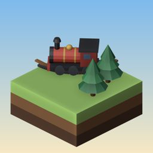

Destek · Support
Express Isles
Bir hata, öneri ya da soru için bize yaz; birkaç gün içinde yanıtlarız.
Found a bug, have an idea or a question? Write to us; we answer within a few days.
Mesaj gönder · Send a message (GitHub hesabı gerekir · needs a GitHub account)
Sık sorulanlar
Nasıl oynanır?
Depodan istasyona parmağınla ray çiz. Bir rayı ikiye ayırırsan makas olur: makasa dokununca ilk trenin hangi yola gideceği değişir, basılı tutunca ortak kolu döner. Hazır olunca ▶'e bas. Her tren kendi rengindeki istasyona çarpışmadan varmalı.
Takıldım.
Ampul düğmesi günde 3 ipucu verir: yanlış rayları kaldırır ve sıradaki adımı bir parmakla gösterir. Hak ertesi gün yenilenir.
Yeni lokomotifler nasıl açılır?
Yıldız topladıkça: 20, 45, 75, 100 ve 130 yıldızda. Ana ekrandaki yıldız sayacına dokunup garajdan seçebilirsin.
İlerlememi sıfırlamak istiyorum.
Ana ekranda dişli → İlerlemeyi sıfırla. Yıldızlar, raylar ve lokomotifler silinir; ses ayarları kalır.
Müziği ya da titreşimi kapatabilir miyim?
Evet, dişli → Ayarlar'dan ses, müzik ve titreşim ayrı ayrı kapanır.
Common questions
How do I play?
Draw rails with your finger from a shed to a station. Split a rail in two and you have a switch: tap it to change which way the first train goes, hold it to turn its shared arm. Press ▶ when ready. Every train must reach the station of its colour without a crash.
I'm stuck.
The bulb gives 3 hints a day: it takes up wrong rails and a finger shows the next step. They come back the next day.
How do I unlock new engines?
With stars: at 20, 45, 75, 100 and 130. Tap the star counter on the home screen to pick one in the garage.
How do I reset my progress?
Home screen → gear → Reset progress. Stars, rails and engines are cleared; sound settings stay.
Can I turn off the music or haptics?
Yes: gear → Settings turns sounds, music and haptics off one by one.